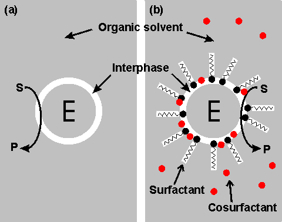

Enzyme Technology
Enzymic reactions in biphasic liquid systems
It would often be useful if enzyme
catalysed reactions could be performed in solvents other than water, as this is
not the ideal medium for the majority of organic reactions. Many reactants (e.g., molecular oxygen, steroids and lipids) are more soluble in organic solvents than
in water and some products may be quite labile in an aqueous environment.
Accomplishing reactions with such substrates (e.g., the aerobic oxidation of
oestrogens catalysed by fungal laccase) in non-aqueous media allows a much
increased volumetric activity to be achieved. Microbial contamination, by
contrast, is much less of a problem in such solvents, and the consequent absence
of microbial proteases may lead to an apparent stabilisation in the biocatalyst.
Some polymerising reactions, for example the polymerisation of
phenols catalysed by peroxidase, will produce a higher molecular weight product
when carried out in a solution more able to dissolve the products (i.e., oligomers) initially formed. Under normal physiological conditions, hydrolytic
enzymes catalyse the degradation of polymers; i.e., hydrolases are transferases
normally transferring a moiety to the acceptor, water. Water is normally present
in a vast molar excess over other potential acceptor molecules so no reaction
occurs other than hydrolysis. Also, the normal 'concentration' of water (about
55.5 M) is much greater than its typical Km (about 50 mM) and the rate
of hydrolysis will not be affected as the reaction proceeds. By greatly reducing
the water activity in these systems they can be used to transfer to other
acceptors. Examples of this can be found in the transesterification reactions of
esterases and lipases, described more fully later, and the (undesirable)
formation of isomaltose from glucose catalysed by glucoamylase.
Restriction of
the enzyme to the aqueous phase effectively immobilises the enzyme and allows
its straightforward separation, using phase separators developed for the
established chemical process industry, from product-containing organic phase.
The main asset of these systems, however, is their ability to shift the
thermodynamic equilibria of the reactions. As was pointed out in Chapter
1,
enzymes do not change the equilibrium constants (Keq) of reactions.
Although changes in the physical conditions (i.e., temperature, pH and pressure)
do affect the Keq of a reaction, usually this effect is relatively
slight over the physical range allowed by stability of the biocatalysts. Use of
a biphasic aqueous-organic system, however, may result in substantial changes in
the practically useful 'apparent' Keq. The use of enzymes within
organic solvents normally results in a two phase system as all water-soluble
enzymes possess a significant amount of strongly bound water, even when in an
apparently dry state. This is shown schematically in Figure
7.1.

Figure 7.1. Schematic diagram showing two
configurations for an enzyme within an organic solvent. (a) almost-anhydrous
enzyme suspended in the organic solvent. The enzyme (E) is surrounded by a thin
interphase consisting of water or water plus immobilisation support. (b) enzyme
dissolved in a reversed micellar medium. The micelles are formed by the
surfactant molecules with assistance from the cosurfactant (if present). The
surfactant (e.g., cetyltrimethylammonium bromide (CTAB), bis(2-ethylhexyl) sodium
sulphosuccinate (AOT), phosphatidylcholine, tetraethyleneglycoldodecylether)
is only found at the interphase boundary, whereas the water-immiscible
cosurfactant (e.g., butanol, hexanol, octanol), added to vary the properties of
this interphase, is generally less polar and more soluble in the organic
continuous phase. Both preparations (a) and (b) give optically transparent
solutions.
Home
| Back | Next
This page was established in 2004 and last updated by Martin
Chaplin
on
6 August, 2014
|